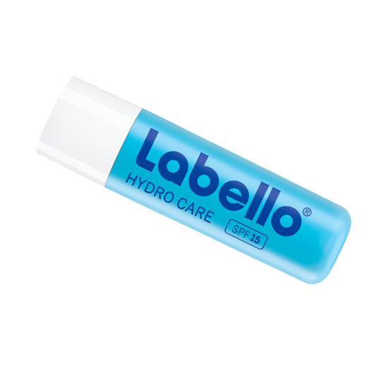

Hverdagens helte til intensiv pleje og beskyttelse
Labello A
plejeeffekt
Er dine læber tørstige efter fugt? Labello A giver intens, langvarig fugt til udtørrede læber. Formulaen, der er beriget med rent vand og aloe vera, gør selv de tørreste læber bløde og glatte igen. Labellos innovative formula låser fugten inde i dybden og støtter derved den naturlige hydreringsproces og giver endnu glattere og sundere læber. Den er utrolig let, giver en ikke-klistrende finish på læberne og har en behagelig mild duft. Den sørger for synet, vækst, immunforsvaret, tør hud, appetit og smag. Desuden for fosterets udvikling af organer.
Ingredienser
Hydrerende rent vand og fugtgivende aloe vera
farve og glans
Hydro Care har en ultralet ikke-klistrende formula, der hurtigt absorberes, så læberne får en forfriskende, naturlig farveløs finish.
Anvendelse
Specielt udviklet til tørre læber, men lige effektiv for alle. Benyttes dagligt efter behov direkte på læberne. Hvis læberne er tørre, skal den benyttes regelmæssigt for at holde fugten inde.